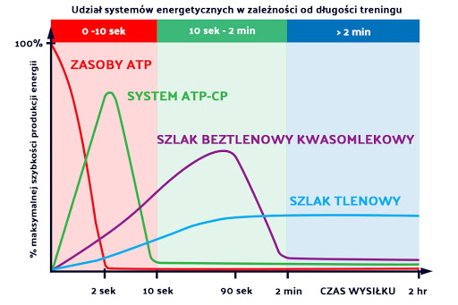

|
 |
|---|
I Ty możesz zostać małym anatomem!
Mięsień (łac. musculus) – kurczliwy narząd, jeden ze strukturalnych i funkcjonalnych elementów narządu ruchu, stanowiący jego element czynny. Jego kształt i budowa zależy od roli pełnionej w organizmie.Mięśnie zbudowane są z tkanki mięśniowej. Połączone z elementami szkieletu, w wyniku skurczów mięśniowych kurczą się i rozkurczają, powodując ruchy poszczególnych elementów szkieletu względem siebie. Źródłem energii, z którego korzysta mięsień, jest zmagazynowany w nim glikogen lub glukoza dostarczona przez krew. Działanie mięśni uzależnione jest od oporu stawianego przez szkielet (hydrostatyczny lub twardy). Liczba mięśni człowieka jest określana na 450–500. U mężczyzn mięśnie stanowią około 40% masy ciała, a u kobiet około 35%
Mięśnie możemy podzielić na:
-głądkie
-poprzecznie prążkowane.
Mięśnie gładkie to takie mięsnie którymi nie możemy sterować z własnej woli, np. mięsnie w naczyniach krwionośnych czy w układzie pokarmowym.
Mięśnie poprzecznie prążkowane to takie który możemy sterować i je napinać, wszystkie mięsnie szkieletowe, np mięsnie twarzy.
Nazwa pochodzi od ułożenia się w mięsniu reguralnie włokien mięsniowych które w obrazie pod mikroskopem dają obraz prążkowany.
Skurcz koncentryczny występuje gdy mamy napięcie mięśniowe i długość mięsienia się skraca.
W życiu codziennym gdy podnosisz kubek z kawą, pracuje biceps.
Skurcz izometryczny występuje gdy mamy napięcie mięśniowe i długość mięsie nia się nie zmienia.
W życiu codziennym gdy chcesz otowrzyć słoik a on ani drgnie, mięśnie przedramion napięte maksymalnie ale ruchu nie ma.
Skurcz ekscentryczny występuje gdy mamy napięcie mięśniowe i długość mięsienia się wydłuża.
W życiu codziennym gdy siadasz na krześle, mięsnie czworogłowe się rozciągaja ale pracują.
Mięsnie szkieletowe(poprzecznie prążkowane) możemy podzielić na dwa typy.
Włokna mięśniowe typu I to włokna czerwone, wolnokurczliwe. Włokna te charakteryzują się długim czasem pracy,
mają odcień czerwony ponieważ posiadają duża ilość mioglobiny, białka które jest odpowiedzialne za magazynowanie tlenu w komurkach mięsni.
Włókna typu IIa i IIb to włokna białe , szybkokurczliwe. Włokna te charakteryzują się krótkim czasem pracy od 2 min.
ATP -> ATP-PC -> kwas mlekowy -> utlenianie kwasów tłuszczowych

|
|
|---|
| Klatka piersiowa i brzuch | Kończyna górna przód | Kończyna górna tył | Plecy | Kończyna dolna przód | Kończyna dolna tył | Przedramie | Ręka | Stopa | Głowa |
|---|---|---|---|---|---|---|---|---|---|
| - m. Piersiowy większy - m. Piersiowy mniejszy - m. Zębaty przedni - m. Prosty brzucha - m. Skośny Zewnętrzny i wewnętrzny - m. Poprzeczny brzucha |
- m. Naramienny przedni akton - m. Dwugłowy ramienia (biceps) - m. Ramienny - m. Zginacze palców |
- m. Naramienny tylni akton - m. Trójgłowy ramienia (triceps) - m. Prostowniki palców |
- m. Czworoboczny - m. Równoległoboczny - m. Obły większy - m. Najszerszy grzbietu - m. Prostowniki grzbietu |
- m. Czworogłowy - m. Krawiecki - m. przywodziciele uda - m. Piszczelowy przedni - m. Strzałkowy długi |
- m. Pośladkowy wielki - m. Pośladkowy średni - m. Pośladkowy mały - m. Dwugłowy uda - m. Półścięgnisty - m. Półbłoniasty - m. Brzuchaty łydki - m. Płaszczkowaty łydki |
| Pompki/Wyciskanie leżąc | - m. Piersiowy większy - m. Naramienny przedni akton - m. Trójgłowy ramienia (triceps) |
|---|---|
| Przysiady | - m. Czworogłowy - m. Pośladkowy wielki - m. Prostowniki grzbietu |
| Podciąganie na drążku | - m. Najszerszy grzbietu - m. Czworoboczny - m. Równoległoboczny - m. Dwugłowy ramienia (biceps) |
| Martwy ciąg | - m. Prostowniki grzbietu - m. Czworogłowy - m. Pośladkowy wielki - m. Dwugłowy uda |